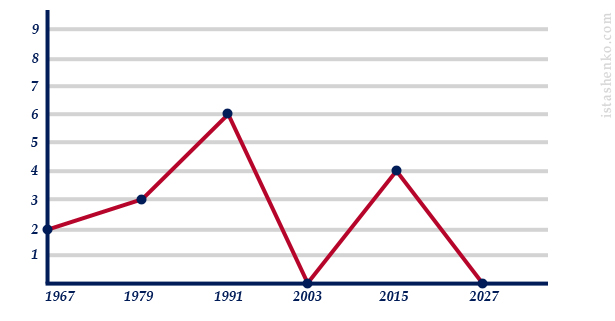

Наше агентство является киевским офисом японского брачного агентства, которое работает в Украине с 2009 года. Благодаря этому, у нас уже есть огромная база состоятельных, успешных и искренних джентльменов которые тоже, как и вы в поисках своей второй половинке. С самого начала своей работы, мы стремились помогать именно тем, кто больше всего нуждался в нашей помощи, что и определяет миссию нашей компании – помочь тем, кто стремится к своему счастью, но не может его найти из-за всевозможных обстоятельств.
У некоторых из вас подруги уже начинают жениться, а у некоторых уже начинают разводится. Кто-то вышел замуж за Колю из соседнего подъезда, кто-то за Антона, с которым училась вместе, кто-то за Марка бухгалтера в компании, но на кого ни посмотришь – примеры их семейной жизни как-то не вдохновляют. Растягивание семейного бюджета от аванса до зарплаты, отсутствие отдельного жилья, постоянная нехватка времени для собственных дел и друг для друга, то есть полное отсутствие романтики и настоящих ощущений. И вы начинаете понимать, что эта жизнь – не для вас, что вы не хотите, выйдя замуж, превращать каждый свой новый день в борьбу за выживание. Зачем вам все эти проблемы, если вы всего лишь хотели себе верного, любящего и заботливого мужа без материальных проблем? Многие могут сказать, что иметь такого мужа – это роскошь. Но, мы уверены, что это не так. И у каждой женщины есть возможность сделать совершенно иной выбор и изменить свою жизнь
Чтобы найти достойного мужа нужно просто расширить сферу своего поиска. Глупо ограничивать свой выбор только из друзей или близких знакомых, так как найдя похожего мужчину как у всех подружек, жизнь будет тоже как у всех подружек – без спокойствия и гармонии в душе. Именно поэтому необходимо найти мужчину из совершенно другого мира. Сегодня, благодаря Интернету расстояния между людьми значительно сократились, и воспользовавшись этой отличной возможностью, каждая сможет найти мужчину, который станет прекрасным мужем. Выйти замуж за иностранца – это не сказка, а вполне осуществимая цель, если к ее реализации правильно подойти. Во-первых, крайне необходимо позволить мужчинам узнать о вас, во-вторых, отфильтровать мужчин с неблагородными намерениями. И как раз с такими задачами помогают наши профессионалы, которые имея богатый опыт и разбираясь в своем деле лучше всех, всегда могут подсказать, что надо делать. От вас же необходимо всего лишь правильно заполнить анкету и начать свое путешествие в поисках свой любви уже сегодня.
Мы гарантируем вам, что, выбирая наше брачное агентство вы получите качественный сервис западного уровня. Более подробно про то как мы работаем вы сможете ниже, или в разделе «Услуги». Если вы прямо сейчас уже готовы сделать свой первый шаг, чтобы выйти замуж за иностранца, просто перейдите на страницу «Регистрация анкеты».

Наше брачное агентство является лидером на украинском рынке по оказанию услуг для знакомства и заключению браков украинок с японцами. Обладая высокими навыками поиска и благодаря индивидуальному подходу к каждому клиенту, мы смогли добиться нашей высокой и репутации свести сердца многих клиентов.
Мы истинно убеждены в том, что помогаем нашим клиентам найти новый путь к ихнему счастью. Всем известно, что найти подходящего себе партнера это не простая задача, а партнера из другой страны, еще сложнее. Именно для преодоления таких сложностей существуем мы. Большой опыт и высоких профессионализм наших специалистов, поможет каждому начать новый путь с лёгкостью и в радости.
Только за 2015 год наша команда помогла более чем 10 парам найти друг друга на этой большой планете. Удивительно, но факт, что все семейные пары, познакомившиеся через наше агентство, по сей час живут вместе и в гармонии. Наша команда ориентирована не на числа в отчетах, а на счастливые улыбки наших клиентов.
Брачное агентство «TOKIO» входит в тройку лучших агентств Украины. Профессионализм работников и хорошая репутация, всегда был залогом нашего успеха. Не все брачные агентства готовы до конца быть открытыми и честно вести диалог со своими клиентами. Ориентируясь на достижение цели клиента, прежде всего мы стараемся быть открытыми и честными в своей работе. Мы всегда уверены, что клиенты будут довольны нашей работой, а самое главное — результатом.
Вся переданная вами конфиденциальная информация хранится в специально защищенных серверах в Европе. Ваша информация не может быть раскрыта никому без вашего разрешения. Так же, мы не публикуем вашу информацию на просторах стран СНГ, и вы можете быть спокойны, что ваша анкета не попадет на глаза вашим коллегам или знакомым.